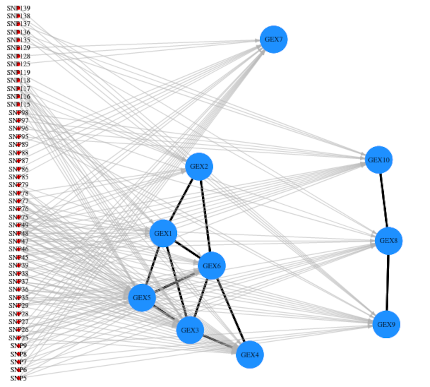
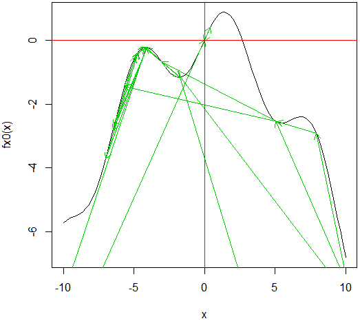

Microservices Communication for Liquidity Monitoring in DeFi Protocols
Revista E&S, 2026
Revista E&S, 2026. DOI 10.22167/2675-6528-202600822.
Pesquisa · ensaios · relatórios
Trabalhos sobre DeFi, estatística, saúde pública, fundamentos da matemática e métodos numéricos.
Revista E&S, 2026
Revista E&S, 2026. DOI 10.22167/2675-6528-202600822.
SINAPE 2022 · Anais da ABE
MIRANDA, Francisco Rosa Dias de et al. Análise de risco e modelos de classificação para óbitos por COVID-19 no estado de São Paulo. 2022, Anais.. ABE: São Paulo, 2022. Disponível em: https://sinape2022.eventize.com.br. Acesso em: 10 out. 2026.
Registro no Repositório da Produção USP.
Instituto de Ciências Matemáticas e de Computação (ICMC-USP)
Neste relatório, apresentamos brevemente algumas técnicas de caracterização molecular de alta escala, para inferir a estrutura latente de expressões gênicas de acordo com polimorfismos de nucleotídeo único (SNPs), utilizando Modelos Hierárquicos de Regressão não-relacionada aparentemente esparsa (SSUR).

29º SIICUSP · USP
Apresentação de parte dos trabalhos desenvolvidos em 2020 pelo grupo de extensão PREDICT no 29º Simpósio Internacional de Iniciação Científica e Tecnológica da USP – SIICUSP 2021.
Departamento de Matemática — Universidade de São Paulo (USP)
Este artigo, escrito no primeiro semestre de 2020, apresenta um panorama histórico sobre a gênese da Teoria dos Conjuntos, analisando as quebras de paradigma que esta causou na matemática, assim como suas implicações na axiomatização desenvolvida posteriormente por sistemas como ZFC e Teoria das Categorias.
Laboratório de Matemática Aplicada — IME-USP (2016)
Este trabalho foi realizado no segundo semestre de 2016 para a disciplina Laboratório de Matemática Aplicada, no IME-USP. Nele, apresentamos um breve panorama de como podemos calcular soluções numéricas de equações polinomiais através dos Métodos de Newton e Secante, utilizando os pacotes do R pracma e spuRs.
